Krümelbahn
KrümelbahnEisenbahn- und Modellfahrzeuge aus Solingen

Eisenbahnwagen in H0-N-Z
| Jahr | Aufdruck/Anlass | Fahrzeug | Baugröße | Katalognr. | Abbildung | |
|---|---|---|---|---|---|---|
| Hanns Heinen Modellbau Solingen | Gr20 | H0 | (Roco 48003) | 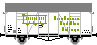 |
||
| Ohligser Pils | Ichqrs377 | H0 | (Märklin 4415) | 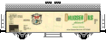 |
||
| Beckes | 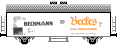 |
|||||
| Beckmann Bier | 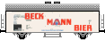 |
|||||
| Bergisch Alt | 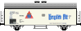 |
|||||
| Bergisch Malz | H0 | (Märklin 4415) | ||||
| 1983 | Beckmann Bier | Ichqrs | Z | (Märklin 8600) | ||
| Bergisch Alt | ||||||
| Bergisch Malz | ||||||
| 1985 | Ohligser Pils | Ichqrs | N | (Fleischmann 8328) | ||
| Beckes | ||||||
| Beckmann Bier | ||||||
| Bergisch Alt | ||||||
| Bergisch Malz | ||||||
| 1986 | Zwilling J.A.Henckels Solingen | Ichqrs377 | H0 | (Märklin 4415) Koll 86701 |
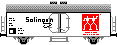 |
|
| Wilkinson Sword Solingen | Rmmso | H0 | (Märklin 4481) Koll 86706 |
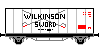 |
||
| 1987 | Ohligser Pils | Ichqrs377 | H0 | (Märklin 4415) Koll 87013 |
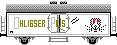 |
|
| Z | (Märklin 8600) | |||||
| Knirps Solingen | Tk01 | H0 | (Märklin 4680) Koll 87702 |
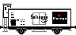 |
||
| Stadtsparkasse Solingen | Rmmso | H0 | (Märklin 4481) Koll 87722 |
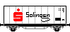 |
||
| Haribo Solingen | Uhs | H0 | (Märklin 4440) Koll 87732 |
|||
| 1988 | Quality made in Solingen | Rmmso | H0 | (Märklin 4481) Koll 88724 |
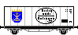 |
|
| 1989 | Krups Solingen | Ichqrs377 | H0 | (Märklin 4415) Koll 89706 |
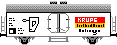 |
|
| 1991 | Wilkinson Sword Solingen | Kmmgks58 | N | (Minitrix) | ||
| 1992 | Zwilling J.A.Henckels Solingen | Kmmgks58 | N | Minitrix 13820 | ||
| 1997 | 100 Jahre Müngstener Brücke Solingen | Ichqrs377 | H0 | (Märklin 4415) Koll |
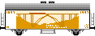 |
|
| (Märklin 4415) Koll |
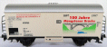 |
|||||
| 2001 | Wilkinson | Rlmms | H0 | (Märklin 94091, Basis=4473) Koll 2001701 |
||
| Wilkinson: So scharf das er hinter Gittern muss | Rmmso | H0 | (Märklin 94093, Basis=4481) Koll 2001709 |
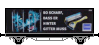 |
||
| 2017 | Zwilling J.A.Henckels | Glr22 | H0 | Brawa 48719 |  |
|
| 2018 | G10 | H0 | Brawa 48740 |  |
||
| 2019 | Gms30 | H0 | Brawa 47975 |  |
||
| 2021 | G10, patiniert | H0 | Brawa 49847 | |
||
| Galileum Solingen | H0 | MEC-Wuppertal | 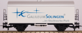 |

Modellfahrzeuge in H0
| Jahr | Aufdruck/Anlass | Fahrzeug | Katalognr. | Abbildung | |
|---|---|---|---|---|---|
| Deutsches Rotes Kreuz Solingen e.V. | MB Sattelzug | Herpa, Werbedruck von WDV | |||
| Knirps | Scania SL Koffersattelzug | Albedo 296011 | |||
| Schokolade Hillers, Gräfrath | Mercedes L2 | Roskopf 26002 | |||
| Spedition Schnug | MB Actros 2543 Hängerzug Wagen 150 mit WP100 und WP101 |
AWM | |||
| MB Actros LH 1848 Koffersattelzug Wagen 151 |
AWM 52179.1 | ||||
| Kronprinz-Räder | VW-Kasten T4, weiß | (Herpa) | 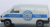 |
||
| 1989 | Feuerwehr Solingen | MB L4500 LF25 1943~1962 |
(Brekina 44250) | ||
| Magirus Rundhauber TLF16 1963~1995 im Besitz der Feuerwehr Oldtimerfreunde Solingen SG-267 |
(Preiser 1218) | ||||
| MB L1500S LF8 1943~1961 |
Roco 2843 | ||||
| Berufsfeuerwehr Solingen | DLK 23-12 1983~2001 SG-2311 |
||||
| 1991 | Mercedes-Benz Jahresmodell 1991 Solinger Stadtwappen |
MB 1748 | (Herpa) | ||
| 1995 | Emil Schmidt | VW-Kasten T1 Samba, weiß/rot | (Brekina) | ||
| 1996 | Seilbahn Schloß-Burg | VW-Kasten T1, weiß | (Brekina) | 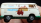 |
|
| 1997 | Mercedes-Benz Jahresmodell 1997 100 Jahre Müngstener Brücke |
MB | (Herpa) | ||
| 1998 | Knirps | VW Sharan | Wiking 299 0322 | ||
| Mercedes-Benz Jahresmodell 1998 Klingenmuseum |
MB 1857 | (Herpa) | |||
| 1998 | Spedition Schnug | MB Actros 2543 Hängerzug Wagen 101 "Termingerecht" |
AWM 50477.2 | ||
| 1999 | 75 Jahre Wiedenhoff | Setra-Bus S328DT | (Rietze) | ||
| Mercedes-Benz Jahresmodell 1999 Schloß Burg a.d.Wupper |
MB 1828 | (Herpa) | |||
| Tierpark Fauna, Solingen | VW-Kasten T2, moosgrün | (Brekina 33288) | |||
| 2000 | 125 Jahre Spedition Keull | MAN F 2000 Com. PHZ | AWM | ||
| 2001 | Wilkinson | Smart Fortwo (Lamellendach) | Busch 48913 | ||
| 2002 | Mercedes-Benz Jahresmodell 2002 Rheinisches Industriemuseum - Gesenkschmiede Hendrichs |
MB 1858 | (Herpa) | ||
| 2003 | Wiedenhoff | Setra-Bus S 317 GT-HD | AWM 71452 | 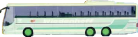 |
|
| 2005 | O-Bus der Stadtwerke Solingen Bus 64 mit Werbung "Wilkinson-Quattro" |
MAN SL172 H0 SG-SW 264 |
(Wilkinson/Grell) | 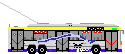 |
|
| 2006 | Wilkinson | Smart Fortwo (Glasdach) | Busch 48913 | ||
| O-Bus der Stadtwerke Solingen Bus 57 bzw. Bus 58 bzw. Bus 60 |
ÜHIIIs (4 Mitteltüren) Wg. 59:SG-SW 2059 |
(Wilkinson/Grell) Fleischmann SSk07 865286 (3er Set) |
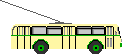 |
||
| O-Bus der Stadtwerke Solingen Bus 59 mit Werbung "Wilkinson Klingen von Weltruf" |
(Wilkinson/Grell) Faller Busdepot 130970 |
||||
| O-Bus der Stadtwerke Solingen Bus 59 mit Werbung "Wilkinson Klingen von Weltruf" |
(Wilkinson/Grell) |
||||
| O-Bus-Anhänger der Stadtwerke Solingen Wagen 6 mit Werbung "Wilkinson Klingen von Weltruf" |
Orion WH 112N-3 SG-SW 6 |
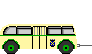 |
|||
|
2007 | O-Bus der Stadtwerke Solingen Bus 1 mit Werbung "Solinger Tageblatt" Bus 3 mit Werbung "Löhmers Kaffee" Bus 8 ohne Werbung |
ÜHIIIs (2 Mitteltüren) SG-2030 SG-2032 |
||
|
O-Bus-Anhänger der Stadtwerke Solingen Wagen 7 mit Werbung "Wilkinson" Wagen 8 mit Werbung "Möbelhaus Diller" Wagen 9 ohne Werbung |
Orion WH 112N-3 SG-2074 SG-2075 |
|||
| 2008 | Spedition Schnug - Qualität made in Solingen | AWM | |||
| Krankentransport Feuerwehr Solingen | VW T1 Bus Samba SG-283 |
Schuco 25457 | |||
| 50 Jahre Malteser Solingen | Ford Transit (KTW4) | (Busch) | |||
| Mercedes-Benz Jahresmodell 2008 Kotten im Bergischen Land - Balkhauser Kotten |
MB Actros LH MP | (Herpa) | |||
| 2009 | Feuerwehr Solingen | Mercedes-Benz C-Klasse FuRW I, 2006~ SG-2306 |
Busch 49112 | ||
| 2010 | Volkswagen T5 Transporter MD Bus LE 3 Mangenberg, 2007~ SG-2391 |
Rietze 51772 | |||
| Schlingmann MAN TGM LF20/16 LE 6 Gräfrath, 2009~ SG-SG 1250 |
Rietze 61177 | ||||
| Volkswagen T5 / KR NEF FuRW III, 2010~ SG-SG 1361 |
(Rietze 51772) | ||||
| 2011 | O-Bus der Stadtwerke Solingen Bus 37 ohne Werbung Bus 42 mit Werbung "Wüsthoff-Dreizack" |
MAN SL172 H0 SG-SW 237 SG-SW 242 |
(Wilkinson/Grell) | ||
| Feuerwehr Solingen | Volkswagen T5 Transporter MD Bus FuRW I, 2010~ SG-SG 1293 |
Rietze 52619 | |||
| 2012 | Volkswagen T5 / GP KR NEF Klinikum Solingen, 2010~ SG-SG 1362 |
(Rietze 51772) | |||
| Notfallseelsorge, Solingen | Volkswagen T5 Transporter GP Bus SG UR 3777 |
Rietze 52647 | |||
| Stadtwerke Solingen Wagen 715 693 Aufderhöhe |
Mercedes-Benz Citaro O530 | Rietze 66414 |  |
||
| Dr. Hillers Pfefferminz | Henschel HS 140 | Brekina 73312 | |||
| Stadtwerke Solingen Wagen 953 683 Solingen Burger Bahnhof Wagen 960 686 Aufderhöhe Wagen 965 683 W-Vohwinkel |
Hess SwissTrolley3 SG-SW 953 SG-SW 960 |
VK-Modelle 08701801-1 VK-Modelle 08701801-10 VK-Modelle 08701801-15 |
 |
||
| 2013 | Feuerwehr Solingen | Schlingmann MAN TGM LF20/10 KatS LE 1 Ohligs, 2011~ SG-SG 1251 |
Rietze 68245 | ||
| WIETMARSCHER MB Sprinter Design-RTW FuRW I, 2013~ SG-SG 1357 |
Rietze 72001 | 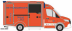 |
|||
| IVECO MK 120-23 LF 16/12 LE 7 Wald (RAL 3024), 1993~ SG 2323 |
Rietze 71016 | ||||
| 2014 | Mercedes-Benz Jahresmodell 2014 Plagiarius |
MB Actros | (Herpa) | ||
| 2015 | Stadtwerke Solingen Wagen 169 699 Kohlsberg mit Werbung "OBI" |
Mercedes Benz O305 SG 2054 |
Brekina 50736 | ||
| Item | Mercedes Actros | elasto form KG 6716 | |||
| 2016 | O-Bus-Anhänger der Stadtwerke Solingen Wagen 6 mit Werbung "Emil Schmidt" geänderte Werbung durch Aufkleber des Obus-Museum Solingen |
Orion WH 112N-3 SG-SW 6 |
(Wilkinson/Grell) | ||
| 2017 | Stadtwerke Solingen Verkehrsaufsicht |
VW Golf 7 Variant | Rietze 32202 | 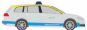 | |
| Stadtwerke Solingen Wagen 956 681 Hauptbahnhof mit Werbung "Solinger Tageblatt" |
Hess SwissTrolley3 | VK-Modelle 18016 | 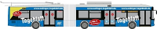 |
||
| O-Bus der Stadtwerke Solingen Bus 59 mit Werbung "Walbusch" geänderte Werbung durch Aufkleber des Obus-Museum Solingen |
ÜHIIIs (4 Mitteltüren) SG-SW 2059 |
(Wilkinson/Grell) | |||
| Mercedes-Benz Jahresmodell 2017 Tierheim Glüder |
Actros Bigspace Sattelzug 3-achs (6x2) mit Meuseburgerauflieger 4-achs. | (Herpa) | |||
| 2018 | Feuerwehr Solingen | MB /8 KTW 1985~ SG-2328 |
Brekina 13811 | ||
| Magirus D TLF 16 1976~1997 SG-2345 |
Brekina 58801 | ||||
| Magirus D DL 30 1974~1995 SG-2330 |
Brekina 58802 | ||||
| 2019 | Stadtwerke Solingen Wagen 704 695 Abteiweg |
Mercedes-Benz O405 | Rietze 75208 | 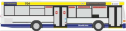 |
|
| Stadtwerke Solingen Wagen 151 692 Haan-SG Ohligs Bf mit Werbung "Siepmann" |
Mercedes Benz O305 SG OM 151H |
Brekina | |||
| Mercedes-Benz Jahresmodell 2019 Galileum |
MB Actros 1850 | (Herpa) | |||
| 2021 | Feuerwehr Solingen | Mercedes-Benz U5023 TLF 16/24-Tr. LE 7 Merscheid 2014~ SG-SG 1220 |
Busch 51054 | ||
| Mercedes-Benz Jahresmodell 2021 Fauna Solingen |
MB Actros MP5 Gigaspace | (Herpa) | |||
| 2022 | Feuerwehr Solingen | Volkswagen T1 Kombi KTW Nr.6 ~1970 |
Brekina 31613 | ||
| Volkswagen T1 Kasten TroLf Nr.1 1963~1982 |
Brekina 32751 | ||||
| Volkswagen T1 Pritsche Nr.32 ~1980 |
Brekina 32981 | ||||
| Mercedes-Benz L408G RTW 4 1972~1986 SG 2347 |
Brekina 36921 | ||||
| O-Bus der Stadtwerke Solingen Bus 59 mit Werbung "Veltins" geänderte Werbung durch Aufkleber des Obus-Museum Solingen |
ÜHIIIs (4 Mitteltüren) SG-SW 2059 |
(Wilkinson/Grell) | |||
| Stadtwerke Solingen (ohne Bus-Nr.) 695 Graf-Wilhelm-Platz |
Mercedes Benz O302-11 Rstn | Brekina 52151 |  |
||
| 2023 | Stadtwerke Solingen (ohne Bus-Nr. mit Werbung "Solinger Tageblatt") 695 Graf-Wilhelm-Platz geänderte Werbung durch Aufkleber des Obus-Museum Solingen Bus-Nr. 151 bei den SWS |
||||
| Feuerwehr Solingen | WIETMARSCHER MB Sprinter Design RTW '18 SG-SG 1377 |
Rietze 76178 | |||
| Stadtwerke Solingen Bus 148 mit Werbung "Grafweg - Baustoffe" 695 Graf-Wilhelm-Platz |
Mercedes Benz O302-11 SG-2068 |
Brekina 52156 | |
||
| Stadtwerke Solingen Bus 154 mit Werbung "Möbel Hahn" 695 Graf-Wilhelm-Platz |
Mercedes Benz O302-11 SG-2121 |
Brekina 52157 | |||
| 2024 | Stadtwerke Solingen Bus 15 mit Werbung "Solinger Tageblatt" 1 Merscheid - Ohligs SG 2046 |
TS 3 | VK-Modelle 40015 | 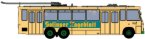 |
|
| Stadtwerke Solingen Bus 16 mit Werbung "Beckmann Bier" |
VK-Modelle 40016 | 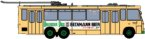 |
|||
| Stadtwerke Solingen Bus 27 mit Werbung "Volksbank" |
VK-Modelle 40027 | 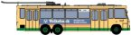 |
|||
| Stadtwerke Solingen Bus 42 neutral |
VK-Modelle 40042 | 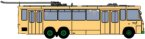 |
|||
| Stadtwerke Solingen Museumswagen 68 mit Werbung "Stadtsparkasse Solingen" |
VK-Modelle 40068 | 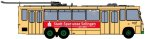 |
|||
| Stadtwerke Solingen Bus 76 neutral mit grünem Streifen |
VK-Modelle 40076 | 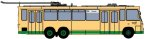 |
|||
| Feuerwehr Solingen | Iveco DLA(K) 23/12 / M32L-AS FuRW I, 2019~ SG-SG 1231 |
Brekina PCX871073 | |||
| MB Vito Kasten, NEF SG-SG 1363 |
Busch 51103 | ||||
| Ford Kuga, Kommandowagen (KdoW) | Busch 53521 | ||||
| 2025 | Magirus DLK 32 n.B. FuRW I, 2019~ SG-SG 1231 |
Rietze 71112 | 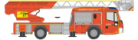 |
||
| Stadtwerke Solingen Bus 32 Mendoza blau |
TS 3 | VK-Modelle 40132 | 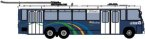 |
||
| Stadtwerke Solingen Bus 38 neutral mit grünem Streifen |
VK-Modelle 40038 | 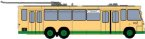 |
|||
| Stadtwerke Solingen Bus 72 mit Werbung "Taverne Mykonos" |
VK-Modelle 40072 | 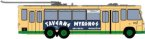 |
|||
| 2026 | Stadtwerke Solingen | Mercedes-Benz Citaro G 2015 | Rietze 73575 |  |
Modellfahrzeuge in anderen Baugrößen
| Jahr | Aufdruck/Anlass | Fahrzeug | Baugröße | Katalognr. | Abbildung | |
|---|---|---|---|---|---|---|
| Wiegand Feinkostfabrik | 1930 Mack AC Pritschenwagen | Matchbox YSG-01 | ||||
| Aktien-Brauerei Beckmann | 1930 Mack AC Bierlastwagen | 1:60 | Matchbox YSG-02 | |||
| Wüsthof Dreizackwerk | 1922 Foden Dampflastwagen | Matchbox YSG-03 | ||||
| Spar und Bauverein Solingen Großwäscherei | GMC | Matchbox YSG-04 | ||||
| Baumschule Luchtenberg | Crossley | 1:36 | Matchbox YSG-05 grün Matchbox YSG-05 gelb Matchbox YSG-05 braun |
|||
| Reifen Meisen | Morris | 1:36 | Matchbox YEX-04 | |||
| Feuerwehr Burg | 1932 Mercedes-Benz Drehleiter, dreiteilig | Matchbox YFE05-SA | ||||
| Automodelle Solingen | 1955 Holden FJ/2104 Panel Van | Matchbox YHN01/SC | ||||
| 1997 | Bus der Stadtwerke Solingen SWS 100 Jahre für Sie mobil 1897-1997 |
MB O405N SG-SW 124 |
1:55 | Siku 3121 | ||
| 2004 | Feuerwehr Solingen | VW 1600 Variant 1970 | 1:43 | Minichamps 430055395 | ||
| 2006 | VW T1 1966 | 1:43 | Minichamps 430052270 | |||
| 2007 | VW 1600L Variant 1972 | 1:18 | Minichamps 100051090 | |||
| 2008 | Berufsfeuerwehr Solingen | VW T1 Bus | 1:43 | Schuco 03188 | ||
| Feuerwehr Solingen | Mercedes-Benz O 6600 | 1:43 | Schuco 02747 |
Anmerkungen
Die meisten (alle?) Fahrzeuge sind Sammlerobjekte und nicht mehr oder nur noch schwer erhältlich. Die Angaben in Klammern beziehen sich auf die Hersteller und die Katalognummern der Basismodelle. Fahrzeuge z.B. mit dem Aufdruck "Haribo" werden hier nur dann aufgelistet, wenn auf ihnen der Ortsbezug "Solingen" erkennbar ist.
Die Sammlung erhebt keinen Anspruch auf Vollständigkeit.
Für Ergänzungen und Korrekturhinweise dieser Liste bin ich dankbar
- schicken Sie mir in diesem Fall bitte eine
- Jahresmodell der Mercedes-Benz Niederlassung Wuppertal-Solingen-Remscheid
- Die Matchbox-Modelle gibt es hier.
- Decals für Einsatzfahrzeuge aus Solingen
- Obus-Museum Solingen
- historische Fahrzeuge
Informationen zum Obus:
Informationen zu den Feuerwehrfahrzeugen: